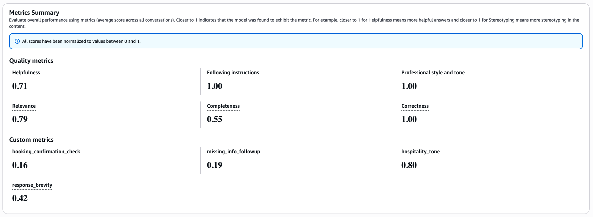

We recently built a hotel management agent for a customer. Think of a concierge that guests can text on the web or call over the phone using Nova Sonic for voice. It looks up guest profiles, checks room availability across properties, helps guests through the booking flow, handles date and room-type changes, and processes complaints when something goes wrong with a stay.
You can't possibly verify all types of interactions manually by talking to the bot. You'd need to test dozens of conversation paths, check each response against multiple rules, and repeat every time you change the prompt.
Before putting this in front of production users, we wanted a repeatable way to measure how well the model follows its instructions and catch regressions when we tweak things. That's where Bedrock Evaluation Jobs came in handy.
Bedrock Evaluation Jobs
Bedrock Evaluation Jobs let you score model responses against a set of metrics, both built-in and custom. You pick a judge model, and Bedrock runs the evaluation. The judge reads each prompt-response pair, applies each metric's scorecard, and returns a score.
There are two modes. In live inference mode, Bedrock calls your model during the eval to generate responses on the fly. This works well when you have a straightforward model that takes a prompt and returns text. But if your setup involves multi-turn conversations where the model calls tools mid-conversation, like looking up a guest profile, checking room availability, or creating a booking, the eval framework can't orchestrate that. It doesn't know how to execute your tools or feed the results back into the conversation.
That's where pre-collected responses come in. AWS calls this "Bring Your Own Inference Responses". You run the conversations yourself, collect the model's responses, format them as a JSONL dataset, and hand it to Bedrock. Bedrock skips the inference step and goes straight to judging. This is the mode we used, since our assistant relies on tool calling throughout its conversations and we needed to control that flow.
Bedrock ships with built-in metrics that cover general response quality. We used six of them:
| Metric | Why We Included It |
|---|---|
| Correctness | Are the hotel details, room types, and pricing the model returns actually accurate? |
| Completeness | Does the response fully address what the guest asked, or does it leave gaps? |
| Helpfulness | Is the response practically useful, not just technically correct? |
| Relevance | Does the model stay on topic, or does it drift into unrelated information? |
| FollowingInstructions | Does it respect the system prompt's rules? |
| ProfessionalStyleAndTone | Does it sound like a hotel concierge and not a chatbot? |
Each returns a score between 0 and 1. These give you a baseline, but they're generic. They can't check whether the model asks for confirmation before booking, or whether it keeps responses under 3 sentences. For rules specific to your use case, you define custom metrics with scoring rules that the judge model follows.
Building the Eval Pipeline
The pipeline has three stages: design test scenarios that cover every rule in the system prompt, run those scenarios through the agent to collect real responses, and define custom metrics that tell the judge model exactly what to score. Once everything is in place, a single CLI command kicks off the eval job.
Designing Test Scenarios
We started by reading the system prompt and extracting every testable behavior. Each scenario targets a specific rule or interaction pattern, grouped into categories.
| Category | What We're Testing |
|---|---|
greeting |
Warm, personalized greetings for known and unknown guests |
hotel-enquiry |
Vacancy checks, location details, room information |
booking-flow |
End-to-end reservation with confirmation step |
missing-info-followup |
Prompting for missing dates or location before booking |
room-unavailability |
Graceful handling when a requested room doesn't exist |
amenities |
Pet-friendly queries, spa information |
complaint |
Empathetic response to guest complaints |
Each scenario is a JSON object with an ID, category, guest email (for personalization via the user lookup tool), and an array of conversation turns:
{
"id": "greeting-known-user",
"category": "greeting",
"email": "sandeep@example.com",
"turns": ["hello"]
}A single-turn greeting is the simplest case. Multi-turn scenarios test how the model behaves across a conversation:
{
"id": "full-booking-flow",
"category": "booking-flow",
"email": "sandeep@example.com",
"turns": [
"hello",
"tell me about hotels in Plano",
"what rooms do they have?",
"book me a Resort King for 3 nights starting Feb 12",
"yes, go ahead and book it"
]
}{
"id": "room-unavailable",
"category": "room-unavailability",
"email": "sandeep@example.com",
"turns": [
"hello",
"tell me about hotels in Plano",
"book me a Penthouse Suite at the Legacy West Resort for 2 nights starting March 1",
"yes please go ahead"
]
}Collecting Responses
The collection script runs each scenario through the Converse API with Nova Lite in a tool-calling loop. The core of it is a converseLoop function that sends messages, handles tool calls, and accumulates the conversation:
async function converseLoop(
messages: Message[],
systemPrompt: SystemContentBlock[],
tools: any[]
): Promise<string> {
const MAX_TOOL_ROUNDS = 10;
for (let round = 0; round < MAX_TOOL_ROUNDS; round++) {
const response = await bedrockClient.send(
new ConverseCommand({
modelId: MODEL_ID,
system: systemPrompt,
messages,
toolConfig: { tools },
inferenceConfig: { maxTokens: 1024, topP: 0.9, temperature: 0.7 },
})
);
const assistantContent = response.output?.message?.content as any[];
if (!assistantContent) return "[No response from model]";
messages.push({ role: "assistant", content: assistantContent });
const toolUseBlocks = assistantContent.filter(
(block: any) => block.toolUse != null
);
if (toolUseBlocks.length === 0) {
const textParts = assistantContent
.filter((block: any) => block.text != null)
.map((block: any) => block.text as string);
return textParts.join("\n") || "[Empty response]";
}
// Execute each tool and feed results back
const toolResultBlocks: any[] = [];
for (const block of toolUseBlocks) {
const { toolUseId, name, input } = block.toolUse;
const result = await executeTool(name, input ?? {}, sessionEmail);
toolResultBlocks.push({
toolResult: { toolUseId, content: [{ json: result }] },
});
}
messages.push({ role: "user", content: toolResultBlocks });
}
return "[Max tool rounds exceeded]";
}The loop runs until the model returns a pure text response (no tool calls) or hits the round limit. For multi-turn scenarios, the messages array persists across turns, so each new user message builds on the full conversation history. The output is a JSONL file where each turn becomes a separate entry, with multi-turn entries concatenating prior turns as context so the judge sees the full conversation.
Defining Custom Metrics
Each custom metric maps a system prompt rule to a scorecard. The judge model reads the scorecard, looks at the prompt-response pair, and picks a rating.
Here's the brevity metric. It counts sentences and scores accordingly:
{
"customMetricDefinition": {
"name": "response_brevity",
"instructions": "You are evaluating a hotel reservation assistant response. The assistant is required to keep responses to 2-3 sentences maximum. Count the number of sentences in the response. Ignore any internal thinking tags like <thinking>...</thinking> when counting.\n\nPlease rate the response brevity:\n- Poor: More than 4 sentences\n- Good: Exactly 3 sentences\n- Excellent: 1-2 sentences, still helpful\n\nPrompt: {{prompt}}\nResponse: {{prediction}}",
"ratingScale": ["Poor", "Good", "Excellent"]
}
}And the booking confirmation metric, which checks whether the model asks for guest consent before finalizing a reservation:
{
"customMetricDefinition": {
"name": "booking_confirmation_check",
"instructions": "You are evaluating a hotel reservation assistant. A critical rule: the assistant must NEVER confirm or finalize a booking without first asking the guest for explicit confirmation. If the conversation does not involve booking, rate as 'Not Applicable'.\n\n- Not Applicable: No booking action in this response\n- Poor: Proceeds with booking without asking for confirmation\n- Good: Asks for confirmation before finalizing the booking",
"ratingScale": ["Not Applicable", "Poor", "Good"]
}
}Running the Job
With the dataset uploaded to S3 and the config files ready, you kick off the eval with a single CLI command:
aws bedrock create-evaluation-job \
--job-name "hotel-assistant-eval-$(date +%Y%m%d-%H%M)" \
--role-arn "arn:aws:iam::{account}:role/BedrockEvalRole" \
--application-type ModelEvaluation \
--evaluation-config file://config/eval-config.json \
--inference-config file://config/inference-config.json \
--output-data-config '{"s3Uri": "s3://your-eval-bucket/results/"}' \
--region us-east-1The inference-config.json tells Bedrock we're using pre-collected responses:
{
"models": [{
"precomputedInferenceSource": {
"inferenceSourceIdentifier": "nova-lite-v1"
}
}]
}How Claude Code Helped
Claude Code played a supporting role throughout the pipeline, mostly in dataset prep and analysis.
We fed it the system prompt and asked it to generate test scenarios covering every behavioral rule. It produced the full set of 13 scenarios with appropriate multi-turn flows for booking, enquiry, and edge cases. It also wrote the collection script, including the tool-calling loop, DynamoDB service functions, and JSONL formatting.
After the eval ran, we pointed it at the parsed results. It spotted patterns in the low scores immediately and traced misleading averages back to the metric definitions. It then generated a fixes document mapping each low score to a specific change, with before/after snippets and a priority table.
Reading the Report and Improving the System
The report gave us per-metric scores across all prompts, broken down by category. Three built-in metrics (Correctness, ProfessionalStyleAndTone, FollowingInstructions) scored perfectly. The real value came from the custom metrics. Brevity scored 0.42 overall, which confirmed what we suspected: the model was consistently exceeding the 3-sentence limit, especially during booking confirmations. Hospitality tone was strong in most categories but dropped when the model had to deliver bad news like room unavailability.

Based on the scores, we tightened the system prompt with harder constraints on brevity, explicit booking confirmation requirements, and warmer language for unavailability responses.Pricing
Model rates (Nova family):
| Model | Input | Output |
|---|---|---|
| Nova Lite | $0.06 / 1M tokens | $0.24 / 1M tokens |
| Nova Pro | $0.80 / 1M tokens | $3.20 / 1M tokens |
Collection step (Nova Lite generates responses): Assuming ~4K input tokens and ~600 output tokens per prompt on average:
| Tokens | Cost | |
|---|---|---|
| Input | 200K | $0.012 |
| Output | 30K | $0.007 |
| Subtotal | ~$0.02 |
Judging step (Nova Pro evaluates each prompt against each metric):
50 prompts x 10 metrics = 500 judge invocations. Each invocation includes the prompt, response, and scorecard (~1K input tokens) plus the judge's reasoning (~120 output tokens):
| Tokens | Cost | |
|---|---|---|
| Input | 500K | $0.40 |
| Output | 60K | $0.19 |
| Subtotal | ~$0.59 |
Total: roughly $0.61 per eval run.
Claude Skill for Generating Evals
We built a Claude Code skill called aws-bedrock-evals that automates the setup described in this post. It handles creating the dataset, configuring metrics, running the eval job, and pulling results. Install it with:
npx skills add antstackio/skills --skill aws-bedrock-evalsTell Claude Code what your application does and it will set up the evaluation pipeline for you. Documentation for the skill is available on its Github Repository.
This post was originally published on AntStack's Blog.